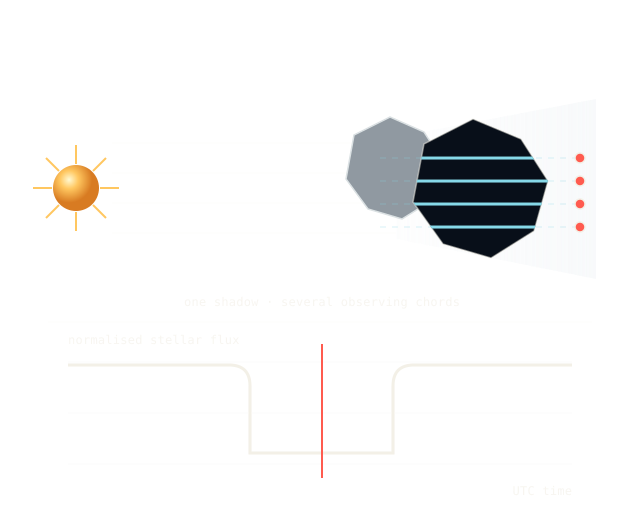

GROUP GUIDE
How the work happens.
Asteroid occultation observing is time-critical, collaborative and learnable. This guide explains the measurement, equipment, fieldwork and how the group operates.
01 · The measurement
What an asteroid occultation tells us
An asteroid occultation occurs when an asteroid passes in front of a distant star. The star can disappear for only a few seconds, but accurately measured disappearance and reappearance times define a chord across the asteroid's projected silhouette.
One observing station measures one chord. Several stations spread across the predicted shadow path can recover the asteroid's size and shape far more precisely. The timing also provides an accurate astrometric position and can improve its predicted orbit.
A miss is still data. It marks where the asteroid's shadow was not and can constrain the edge of the silhouette when combined with nearby positive detections.

02 · Shared equipment
Our telescopes


03 · Fieldwork
The observing site follows the shadow
Scientifically valuable events may require travel to rural Victoria or interstate sites. A campaign can involve weather assessment, route planning, equipment transport, an overnight deployment and time-critical decisions under uncertain conditions.
Some high-priority campaigns may receive travel support connected with ESA or NASA programmes. Support is specific to each event and is never assumed or guaranteed.
Participants can also contribute through event preparation, photometry, data analysis and reporting.
04 · Group structure
One group. No fixed roles.
This is a flat collaboration rather than a club or a hierarchy of permanent observing and analysis positions. The group connects people based at the University of Melbourne with collaborators from SAMU.
Everyone is encouraged to understand the complete process. New participants learn alongside previous observers, contribute to a real campaign and later help the next person through the same workflow.
- Who can join?
- University of Melbourne students and interested external collaborators.
- What matters most?
- Reliability, patience, careful work and a willingness to learn.
- What experience is expected?
- None with telescope operation. We start with the setup.
Next step